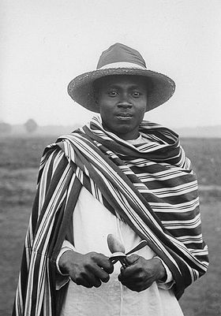

Sakalava
| Sakalava | |
|  « Sakalava. Cuillères remplaçant l'instrument appelé Kayamba » (Exposition coloniale de 1931) |
|
| Populations | |
|---|---|
| Populations significatives par régions | |
| 425 000 | |
| Autre | |
| Langue(s) | sakalava |
| Religion(s) | religions traditionnelles |
| modifier |
|
{kind=link}
Les Sakalava groupe ethnique ou plutôt culturel de Madagascar occupant la majeure partie de la frange côtière occidentale de l'île, depuis la région de Tuléar au sud jusque dans la région du Sambirano au nord. En fait, les Sakalava ne constituent pas vraiment un peuple homogène mais un ensemble d'ethnies diverses ayant fait partie d'un ancien empire apparu dans la seconde moitié du XVIIe siècle.
Sommaire[masquer] |
Territoire[modifier]
{kind=link}
Histoire[modifier]
D'après les traditions, les fondateurs du royaume sakalava étaient les princes maroseraña ou maroseranana (ceux possédant de nombreux ports) de la région de Fiherenana, actuel Tuléar. Ces derniers seraient eux-mêmes issus des clans zafiraminia du sud-est de l'île que beaucoup considèrent comme des Blancs, peut-être d'origine arabe. Toujours est-il qu'en contact avec les traitants européens dont ils obtiennent des armes, en échange avant tout des esclaves, ils soumettent rapidement les autres princes du voisinage, à commencer par ceux du sud, en zone mahafaly. Le véritable fondateur de la puissance sakalava était Andriamisara dont le fils, Andriandahifotsy (« le Prince blanc ») étend ensuite l'autorité vers le nord jusqu'au-delà du Mangoky. À leur tour, les deux successeurs de ce dernier, Andriamanetiarivo et Andriamandisoarivo poursuivent leur conquête jusque dans la région de Tsongay, actuel Majunga. Dès cependant cette époque, l'unité de l'empire se brise, à un royaume du sud ou Menabe s'oppose le Boina du nord. Par la suite, le morcellement continue encore, malgré une extension de la puissance des princes du Boina jusque dans l'extrême nord, en pays antankarana.
Son processus de formation permet ainsi d'expliquer la grande diversité du monde sakalava dont les diverses parties continuent partout à perpétuer les particularités d'origine de chaque région, que ce soit du point de vue culturel ou linguistique. Sur ce dernier plan, le seul véritable facteur qui unifie les différents 'dialectes' sakalava est leur commune appartenance au sous-groupe occidental des langues de Madagascar, les distinguant des langues du centre et du littoral oriental.
L'origine même du nom sakalava, ainsi d'ailleurs que sa véritable signification, fait encore l'objet de controverse. Ainsi, les traditions merina font état de multiples harcèlement de bandes sakalava contre leurs villages dès le XVIIe siècle et durant tout le XVIIIe siècle, mais sans que l'on puisse s'assurer que ces dernières avaient un rapport direct avec les habitants des royaumes de la côte. En fait, il semblerait surtout que dans ce cas, ce terme servait d'appellation générique pour désigner toutes les populations nomadisant dans les territoires peu habités entre le pays merina et le littoral occidental de l'île.
Notes[modifier]
Voir aussi[modifier]
Bibliographie[modifier]
- A l'ouest de Madagascar - les Sakalava du Menabe (1998) par Sophie Goedefroit